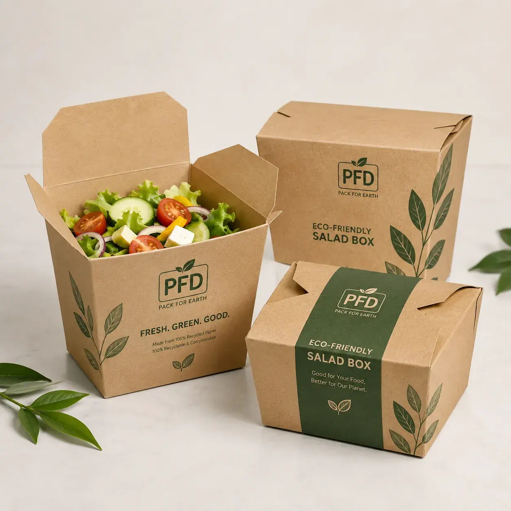

Wholesale custom kraft paper salad boxes designed for takeaway salads, grain bowls and healthy ready meals. Eco-friendly paperboard structure, food-safe inner barrier, rich custom printing and OEM size options for modern food brands. We support OEM size, material selection, structure recommendation, barcode placement and export packaging for global B2B buyers.

Wholesale custom kraft paper salad boxes designed for takeaway salads, grain bowls and healthy ready meals. Eco-friendly paperboard structure, food-safe inner barrier, rich custom printing and OEM size options for modern food brands. This product is ideal for Salad brands, deli chains, supermarket fresh food counters, ghost kitchens and healthy takeaway restaurants. It supports Food-grade kraft paperboard with optional PE or water-based barrier coating with Leak-resistant fold-top structure, easy assembly, natural kraft look, optional window and anti-fog film and Custom CMYK printing, soy-based ink options, matte finish, logo printing, nutrition panels.
| MOQ | 500 PCS custom printed packaging |
|---|---|
| Material | Food-grade kraft paperboard with optional PE or water-based barrier coating |
| Features | Leak-resistant fold-top structure, easy assembly, natural kraft look, optional window and anti-fog film |
| Printing | Custom CMYK printing, soy-based ink options, matte finish, logo printing, nutrition panels |
| Applications | Salads, poke bowls, fruit cups, grain bowls, deli meals, healthy takeaway foods |
| Customization | Size, depth, paper gsm, inner coating, lid style, window, branding, QR code, barcode |
Send product size, quantity, artwork needs, packaging structure and shipping country to Linda Wang for a fast B2B quotation.
WhatsApp Linda Email InquiryCustom Kraft Paper Salad Boxes | Eco-Friendly Takeaway Food Containers Wholesale targets high-intent B2B buyers searching for kraft paper salad boxes, eco friendly takeaway food containers, wholesale salad boxes, custom paper food packaging, salad bowl takeaway box, disposable kraft meal box manufacturer. The page uses clear commercial language, long-tail packaging keywords, material details, customization data and application-specific copy that help both Google and AI search systems understand the product quickly.
Salad brands, deli chains, supermarket fresh food counters, ghost kitchens and healthy takeaway restaurants.
We can customize dimensions, box depth, paper weight, inner barrier, inserts, brand colors, logo printing, barcode or QR code placement, finishing effects and export carton packing according to your project.
Yes. We can apply a food-safe moisture and grease resistant barrier so the box performs well for salads, dressings, grains and chilled ready meals.
Yes. We offer fully custom dimensions, die-cut windows, logo printing, brand colors, QR codes and retail-ready artwork support.
Recommended buyer brief: target food category, package dimensions, product weight or count, preferred paper or fiber material, barrier requirement, print style, quantity, destination market, compliance text and shipping country. MOQ 500 PCS. OEM/customize only.
MOQ 500 PCS - Fast Factory Quote
Click below to contact us quickly by WhatsApp or email. We can help with dieline, samples, printing, materials and worldwide shipping.
Chat on WhatsAppEmail Inquirylinda@colorprintingpackage.com